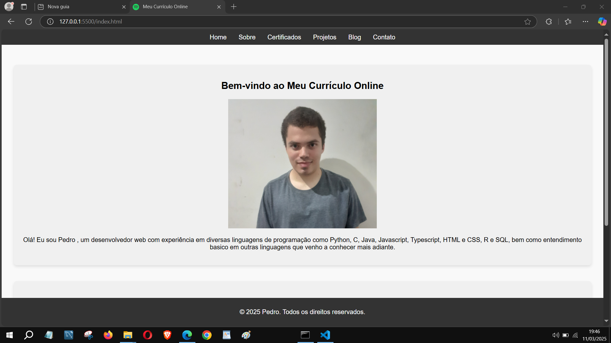

Publicado em 11 de março
Para o intuito de realizar uma expansão no conteúdo do meu portfólio, a partir de hoje teremos novidades em relação ao site, onde agora possui mudanças como uma página para as certificações nas mais diversas plataformas e formas e outra para funcionar no formato de blog contando as histórias que devem ser apresentadas aqui.
No caso das certificações, todos os cursos que eu fiz bem como os eventos que participei serão expostos e cada uma delas a descrição do curso, a plataforma na qual foi realizada, a carga horária em horas, a data da emissão e de conclusão do curso e o link de visualização para que as pessoas que demonstrarem interesse pasan fazer com base naquilo que eu fiz anteriormente, com o intuito de deixar o mais transparente possível.
Para o blog também será contado alguns pontos importantes que devem ser apresentados aqui, tudo com a intensão de deixar profissional, em breve será apresentado o meu site completo, contando de acordo com os meus interesses.
Além disso teremos mudanças que serão constantes também na página de projetos com mais repositórios do github bem como nos outros meios, isso será atualizado na medida do tempo, para ficar ligado nas novidades que apresento em breve.
Tornando o site mais completo, objetivo e eficaz, e divulgando ainda mais os meus produtos e serviços para todos saberem mais de mim, das minhas características, dos meus valores e da minha realidade como cidadão.